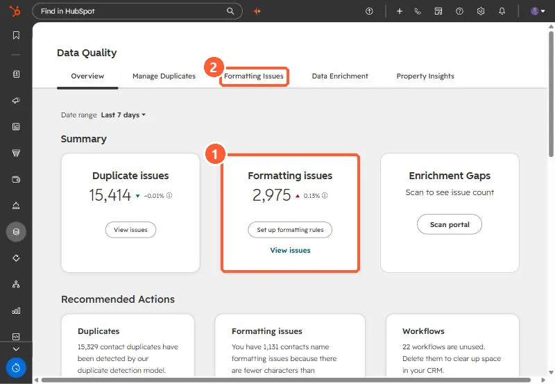

Short answer
The Data Quality tool lists formatting issues, such as a first name stored as jOhN, and suggests fixes you accept or reject. With Data Hub Professional or Enterprise, Actions > Automation turns on rules that fix those issues on existing records and on new ones as they arrive. My demo portal showed 2,975 formatting issues next to 15,414 duplicate issues.
1. Find the issues
Open Data Quality. The overview counts duplicate and formatting issues and links to each.


2. Fix by hand
On each issue, click Accept or Reject, or Fix and automate from the More menu to fix it and set a rule for future records.
3. Automate
In Formatting Issues, click Actions > Automation. On the Rules tab, select the rules you want, such as capitalizing first names. The Changes to records tab shows what the rules changed. You can also set whether Country is stored as a full name or an abbreviation.
Formatting fixes help duplicate detection too. See phone formats hiding duplicates.